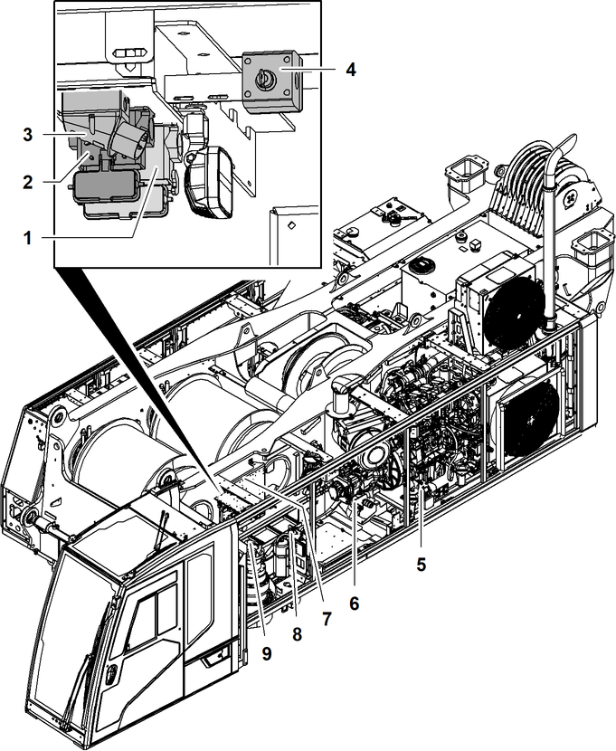

ID_1e8e1c6a1b87441996709fecb882f709-44117e4320975aa30a1e9aa541ff7231-de-DE.html
true
Bedienelemente am Oberwagen

Fig. 678: Bedienelemente am Oberwagen
Steckdose für Spannungsversorgung des Notaggregats | |
Steckdose für Fernsteuerung Notbetrieb | |
Anschluss für Hilfseinspeisung* | |
Schlüsselschalter Lastmomentbegrenzung Abschaltung | |
Steckdose für Fernsteuerung Montage der Ballastierzylinder | |
Anschluss für Hydraulikversorgung des Notaggregats | |
Absperrorgan Freifall* | |
Mechanischer Batterietrennschalter | |
Bildschirm Hochvoltsystem |
Der Schlüsselschalter Lastmomentbegrenzung Abschaltung 4 hat bei Maschinen mit einer ANSI-Traglasttabelle keine Funktion.

Hinweis
Steuerungen müssen im Ablagefach 1 so verstaut werden, dass die Not-Halt-Einrichtungen der Steuerungen verdeckt sind.